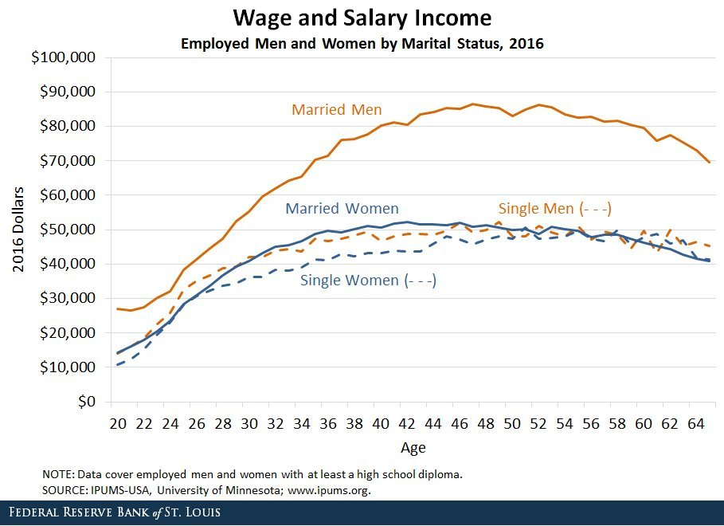

Incels and women must team together to fight the real oppressors, married men.
Wait, the entire wage gap is from married men????
What the hell?
yes, otherwise would they be married?
For men, being married generally means your spouse takes over a lot of household duties, allowing you to work longer, harder hours. The reverse isn’t true for women. Of course, for men being married also comes with the expectation of working to support your spouse and family, which also isn’t true of women, at least not as often (I know a single mother whose coworkers keep imploring her to be a stay at home mom which? She’s single?? The father isn’t around much and doesn’t pay a lot of child support??? Who the fuck is gonna pay for anything????).
I would be very surprised if this statistic were capturing a core effect rather than a knock-on effect.
Which is to say – I would bet a lot of money that “married men vs. non-married men” is not actually the relevant distinction here, it’s just correlated with something that’s doing real work.
Which is to say – it seems overwhelmingly likely that, as compared with [working] women, [working] men have an income distribution that is heavily bimodal. On the left end of the graph, you’ve got a bunch of guys who make close to nothing because they’re unemployable-except-for-incredibly-menial-shit in present circumstances; pretty much all of them are single, because being close-to-unemployable also makes you unmarriageable, and women overwhelmingly prefer to go it alone (and even to be single mothers!) rather than tie themselves to those sort of dudes. On the right end of the graph, you’ve got all the successful men who are responsible for the professional-class wage gap. They probably don’t do so very much better [in terms of personal income] by getting married, but a lot of them are married, because why wouldn’t they be?